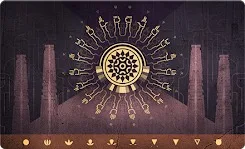
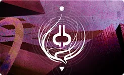
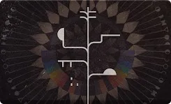
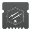
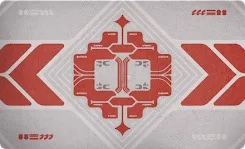
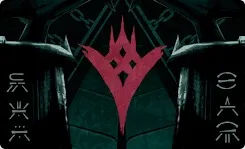
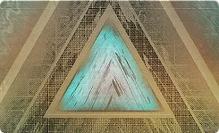
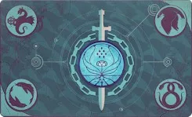
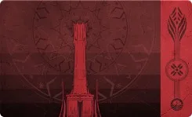
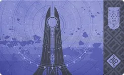

头盔
| 模组 | 图标 | 费用 | 效果 |
|---|---|---|---|
| 弹药搜寻者 | 3 | 特殊弹药搜寻者： 1.25× ｜ 1.4× ｜ 1.5× 弹药进度倍率。 威能弹药搜寻者： 1.25× ｜ 1.4× ｜ 1.5× 弹药进度倍率。 | |
| 弹药斥候 | 1 | 生成与模组匹配的弹药块时： 盟友获得一份相同的弹药块。 弹药斥候弹药块的拾取量： 常规弹药块的 37% ｜ 67% ｜ 100%。 强化弹药块的出现概率由盟友的武器属性决定。 强化弹药块只是外观发光，实际不增加弹药获取量。 | |
| 点尸成金 | 3 | 用手雷击杀时： 额外提供超能能量。 T1 超能：1%? ｜ ?% ｜ ?% T2 超能：?% ｜ ?% ｜ ?% T3 超能：?% ｜ ?% ｜ ?% T4 超能：5?% ｜ ?% ｜ ?% ：?% ｜ ?% ｜ ?% 不与「拳到力来」同时生效。 抓钩近战击杀提供的超能能量减少 50%。 | |
| 充沛 | 3 | 15 米内有战斗人员时使用职业技能： 提供超能能量。 超能能量获取： 2.5%[1.25%] ｜ 4%[2.4%] 按职业乘算： 猎人 ×1 ｜ 泰坦 ×1.2 ｜ 术士 ×2 | |
| 拳到力来 | 3 | 用充能近战击杀时： 额外提供超能能量。 T1 超能：?% ｜ ?% ｜ ?% T2 超能：1.33%? ｜ ?% ｜ ?% T3 超能：?% ｜ ?% ｜ ?% T4 超能：5?% ｜ ?% ｜ ?% ：?% ｜ ?% ｜ ?% 不与「点尸成金」同时生效。 | |
| 空中补偿器 | 3 | +15 ｜ +25 ｜ +30 空中效率。 | |
| 能量节约 | 3 | 用超能击杀时： 为盟友生成一枚能量球。 能量球： 2.5% ｜ 3.75% ｜ 4.4% 超能能量。 两枚能量球之间有 2 秒冷却。 | |
| 强力伙伴 | 1 | 拾取能量球时： 18 米内的盟友获得 x1 护甲充能。 | |
| 辐射光能 | 1 | 施放超能时： 21 米内的盟友获得 x1 护甲充能。 铸造者本身已有充能时同样获得 x1 护甲充能。 处在其他分支职业上的盟友改为获得 x2 护甲充能。 | |
| 虹吸 | 1–2–3 | 3 秒内用与模组元素相同的武器连续击杀 2 名战斗人员： 生成一枚能量球。 能量球： 2.5% ｜ 3.75% ｜ 4.4% 超能能量。 生成能量球后有 1 秒冷却，冷却期间的击杀不计数。 | |
| 超能洗礼 | 3 | 护甲充能生效期间： +20 ｜ +40 ｜ +50 超能属性。 | |
| 瞄准性能 | 2–3 | 对与模组元素相同的武器，取出 1 秒后： +5 ｜ +8 ｜ +10 瞄准辅助 精度锥体大小 ×0.9 ｜ ×0.85 ｜ ×0.8 开镜时长 ×0.85 ｜ ×0.75 ｜ ×0.7 |
护臂
| 模组 | 图标 | 费用 | 效果 |
|---|---|---|---|
| 鼓舞爆弹 | 2 | 造成手雷伤害时： 提供职业技能能量。 技能能量获取： 12%[6%] ｜ 17%[8.5%] ｜ 20%[10%] 触发后有 7 秒冷却。 | |
| 灵巧 | 2–3 | 对与模组元素相同的武器： 取出／收起时长 ×0.8 ｜ ×0.75 ｜ ×0.7。 收起动画时长不会超过 100 操控性对应的值。 | |
| 快速球 | 1 | 手雷的飞行速度与距离提高约 25%。 效果强度随手雷种类而变。 | |
| 火力无限 | 3 | 用手雷击杀时： 生成一枚能量球。 能量球： 0.8% ｜ 1.1% ｜ 1.25% ｜ 1.5% 超能能量。 两枚能量球之间有 10 ｜ 5 ｜ 1 秒冷却。 不与「回天掌法」同时生效。 | |
| 专注打击 | 2 | 造成充能近战伤害时： 提供职业技能能量。 技能能量获取： 12%[6%] ｜ 17%[8.5%] ｜ 20%[10%] 触发后有 7 秒冷却。 | |
| 手雷洗礼 | 3 | 护甲充能生效期间： +20 ｜ +40 ｜ +50 手雷属性。 | |
| 手雷快速启动 | 3 | 持有护甲充能时使用手雷技能： 消耗全部护甲充能，提供手雷技能能量。 获取量按「消耗的充能层数 + 装备的模组份数」之和计算。 手雷技能能量： 16.2% ｜ 21.7% ｜ 28.4% ｜ 34.4% ｜ 38.4% ｜ 41.3% ｜ 43.4% ｜ 45% [12.5% ｜ 14.2% ｜ 16.2% ｜ 18.7% ｜ 21.7% ｜ 25% ｜ 28.4% ｜ 31.6%] | |
| 回天掌法 | 3 | 用充能近战击杀时： 生成一枚能量球。 能量球： 0.8% ｜ 1.1% ｜ 1.25% ｜ 1.5% 超能能量。 两枚能量球之间有 10 ｜ 5 ｜ 1 秒冷却。 不与「火力无限」同时生效。 | |
| 伤害感应 | 2 | 造成充能近战伤害时： 提供手雷技能能量。 技能能量获取： 12%[6%] ｜ 17%[8.5%] ｜ 20%[10%] 触发后有 7 秒冷却。 | |
| 装弹装置 | 2–3 | 对与模组元素相同的武器，取出约 0.5 秒后： +10 ｜ +15 ｜ +18 填装速度 填装时长 ×0.85 | |
| 近战洗礼 | 3 | 护甲充能生效期间： +20 ｜ +40 ｜ +50 近战属性。 | |
| 近战快速启动 | 3 | 持有护甲充能时消耗一次近战技能充能： 消耗全部护甲充能，提供近战技能能量。 获取量按「消耗的充能层数 + 装备的模组份数」之和计算。 近战技能能量： 16.2% ｜ 21.7% ｜ 28.4% ｜ 34.4% ｜ 38.4% ｜ 41.3% ｜ 43.4% ｜ 45% [12.5% ｜ 14.2% ｜ 16.2% ｜ 18.7% ｜ 21.7% ｜ 25% ｜ 28.4% ｜ 31.6%] | |
| 动量转移 | 2 | 造成手雷伤害时： 提供近战技能能量。 技能能量获取： 12%[6%] ｜ 17%[8.5%] ｜ 20%[10%] 触发后有 7 秒冷却。 对抓钩无效。 | |
| 破盾充能 | 4 | 用相同属性的伤害击破战斗人员护盾时： 获得 x1 ｜ x2 护甲充能。 |
胸甲
| 模组 | 图标 | 费用 | 效果 |
|---|---|---|---|
| 弹药生成 | 1–2 | 对与模组元素相同的武器： +20 ｜ +40 ｜ +50 弹药生成属性。 刀剑改为 +20 ｜ +30 ｜ +35 弹药容量属性。 三档分别等同于饥渴刀锋、备用弹匣与坚韧利刃。 | |
| 完全充能 | 3 | 提高护甲充能的层数上限。 护甲充能上限： 4 ｜ 5 ｜ 6 层 | |
| 紧急增强 | 3 | 持有 3 层及以上护甲充能时进入重伤： 提供 10% 伤害抗性。 持续时间按消耗掉的护甲充能层数而定。 3、4、5 层时的增益持续： 6 ｜ 9 ｜ 12 ｜ 15 秒。 | |
| 生命值洗礼 | 3 | 护甲充能生效期间： +20 ｜ +40 ｜ +50 生命值属性。 | |
| 光明利刃 | 2 | 刀剑获得 +30 ｜ +50 ｜ +60 充能效率。 偃月的投射物命中提供 20% ｜ 30% ｜ 35% 额外武器能量。 与「不动如山」加算叠加。 | |
| 抗性 | 1–3 | 对战斗人员获得 15% ｜ 25% ｜ 30% 伤害抗性。 元素抗性模组只减免与该元素匹配的伤害。 狙击抗性减免 30 米以外的伤害。 近战抗性减免 5 米以内的伤害。 震荡阻尼器减免范围、冲击与爆炸伤害。 不同的抗性模组之间、抗性与其他减伤来源之间，一律乘算叠加。 | |
| 稳定瞄准 | 2–3 | 对与模组元素相同的武器，开镜期间： 25% ｜ 30% ｜ 35% 受击抖动抗性。 各种受击抖动抗性之间乘算叠加。 |
腿部
| 模组 | 图标 | 费用 | 效果 |
|---|---|---|---|
| 宽恕 | 3 | 拾取能量球时： 5% ｜ 7.5% ｜ 10% 手雷技能能量 5% ｜ 7.5% ｜ 10% 近战技能能量 5% ｜ 7.5% ｜ 10% 职业技能能量 | |
| 药到病除 | 1 | 拾取能量球时： 开始生命值回复。 游戏内说明写着可以叠加，实际不叠加。 | |
| 元素充能 | 3 | 拾取元素拾取物或摧毁缠结推进计数。 计数满 100% 时获得 x1 护甲充能。 元素拾取物的计数进度： 虚空裂口、焰灵与缠结：50% ｜ 50% ｜ 100% 离子轨迹：34% ｜ 50% ｜ 50% 冰影碎片：25% ｜ 34% ｜ 50% | |
| 强化运动 | 1 | +30 ｜ +50 ｜ +60 敏捷。 PvE 中猎人装 1 个即可把敏捷顶到上限。 | |
| 枪套 | 1-2 | 收起的武器在一段时间后开始自动填装。 每次触发填装弹匣的 10% ｜ 10% ｜ 15%。 两次触发之间间隔 2.5 ｜ 2 ｜ 2 秒。 对后膛填装的榴弹发射器、弩与火箭发射器无效。 | |
| 支配 | 1 | 拾取能量球时： 10% ｜ 13% ｜ 15% 手雷技能能量。 | |
| 绝缘 | 1 | 拾取能量球时： 4% ｜ 5% ｜ 6% 职业技能能量。 | |
| 鼓舞 | 1 | 拾取能量球时： 10% ｜ 13% ｜ 15% 近战技能能量。 | |
| 恢复能量球 | 2 | 拾取能量球时： 为充能最少的技能提供 10% ｜ 13% ｜ 15% 技能能量。 拥有多次充能的技能只要还有 1 次充能就绪，就不会获得能量。 | |
| 复原 | 1 | 拾取能量球时： 回复 16 ｜ 21 ｜ 21 点生命值。 | |
| 回收利用 | 2–3 | 用与模组元素相同的武器拾取弹药块时： 通常额外提供 +1 发弹药。 机枪额外提供 +7 发。 追踪步枪改为提高 +10% 储备上限。 弹药块默认提供 25% 到 33% 的储备。 对弹药搜寻者生成的弹药块完全生效。 在 PvP 模式中不生效。 | |
| 层层不绝 | 4 | 所有护甲充能来源额外多给一层，另有说明的除外。 | |
| 武器洗礼 | 3 | 护甲充能生效期间： +20 ｜ +40 ｜ +50 武器属性。 | |
| 武器激涌 | 3 | 护甲充能生效期间： 提高与模组元素相同的武器伤害。 伤害提高： 10%[3%] ｜ 17%[4.5%] ｜ 22%[5.5%] ｜ 25%[6%] x4 只能靠神器或异域护甲拿到。 |
职业物品
| 模组 | 图标 | 费用 | 效果 |
|---|---|---|---|
| 仁慈终结技 | 1 | 使用终结技时： 消耗 x3 护甲充能。 为盟友生成一枚能量球，提供 7.15% 超能能量。 | |
| 投弹手 | 1 | 使用职业技能时： 提供手雷技能能量。 手雷技能能量获取： 12%[6%] ｜ 17%[8.5%] ｜ 20%[10%] | |
| 壁垒终结技 | 1 | 使用终结技时： 消耗 3 层及以上护甲充能。 提供虚空覆盖护盾，持续时间不定。 3、4、5、6 层时的虚空覆盖护盾持续： 8 ｜ 10 ｜ 12 ｜ 14 秒。 | |
| 职业洗礼 | 3 | 护甲充能生效期间： +20 ｜ +40 ｜ +50 职业属性。 | |
| 面面俱到 | 3 | 15 米内有战斗人员时使用职业技能： 提供手雷、近战、职业与超能能量。 手雷、近战与职业技能能量： 4%[2%] ｜ 6%[3%] ｜ 7%[3.5%] 超能能量： 2%[1%] ｜ 3%[1.5%] ｜ 4%[2%] | |
| 强能终结 | 1 | 护甲充能为 0 层时使用终结技： 获得 x1 护甲充能。 | |
| 爆炸终结技 | 1 | 使用终结技时： 消耗 3 层及以上护甲充能。 提供手雷技能能量。 x3 = 70% ｜ x4 = 80% ｜ x5 = 90% ｜ x6 = 100% | |
| 生命终结技 | 1 | 使用终结技时： 消耗 x1 护甲充能。 立即回满生命值与护盾。 | |
| 连拳终结技 | 1 | 使用终结技时： 消耗 3 层及以上护甲充能。 提供近战技能能量。 x3 = 70% ｜ x4 = 80% ｜ x5 = 90% ｜ x6 = 100% | |
| 扩展 | 1 | 使用职业技能时： 提供近战技能能量。 近战技能能量获取： 12%[6%] ｜ 17%[8.5%] ｜ 20%[10%] | |
| 强力吸引 | 2 | 使用职业技能时： 吸取 12.5 ｜ 18.5 米内的能量球。 对微粒与纹章同样生效。 | |
| 感应护盾 | 2 | 终结技动作期间： 提供 200 点覆盖护盾。 | |
| 收割者 | 3 | 使用职业技能后： 10 秒内的下一次武器击杀生成一枚能量球。 能量球： 0.8% ｜ 1.1% ｜ 1.25% ｜ 1.5% 超能能量。 两枚能量球之间有 10 ｜ 5 ｜ 1 秒冷却。 | |
| 恢复终结技 | 1 | 使用终结技时： 消耗 x2 护甲充能。 为充能最少的技能提供 50% 技能能量。 | |
| 速装终结技 | 1 | 使用终结技时： 消耗 x1 护甲充能。 填满所有武器。 | |
| 特殊终结技 | 1 | 使用终结技时： 消耗 x3 护甲充能。 为使用者与盟友生成一块特殊弹药。 | |
| 时间膨胀 | 3 | 护甲充能每 15 ｜ 18 ｜ 20 秒衰减一层。 默认情况下，装备被动模组时每 10 秒移除一层护甲充能。 | |
| 实用终结技 | 1 | 使用终结技时： 消耗 3 层及以上护甲充能。 提供职业技能能量。 x3 = 70% ｜ x4 = 80% ｜ x5 = 90% ｜ x6 = 100% | |
| 实用快速启动 | 3 | 持有护甲充能时使用职业技能： 消耗全部护甲充能，提供职业技能能量。 获取量按「消耗的充能层数 + 装备的模组份数」之和计算。 职业技能能量： 16.2% ｜ 21.7% ｜ 28.4% ｜ 34.4% ｜ 38.4% ｜ 41.3% ｜ 43.4% ｜ 45% [12.5% ｜ 14.2% ｜ 16.2% ｜ 18.7% ｜ 21.7% ｜ 25% ｜ 28.4% ｜ 31.6%] |

救赎的边缘| 模组 | 图标 | 效果 |
|---|---|---|
| 触手可及 | 在距肢体 ? 米内击杀战斗人员： 提供 ?% 超能能量。 | |
| 电击导体 | 为导体充能时： 特殊弹药储备 +20%。 | |
| 高阶灭绝 | 击杀、、勇士或时： 提供 ?% 的手雷、近战与职业技能能量。 | |
| 持续共振 | 把共鸣存入共鸣宝箱时： 生成 ? 枚能量球。 每枚提供 ?% 超能能量。 | |
| 叠加 | 持有共鸣期间： 击杀生成威能弹药的概率提高。 这个我可不测，才不测。 |

梦魇根源| 模组 | 图标 | 效果 |
|---|---|---|
| 卡巴尔夙敌 | 盟友获得暗影涌流或光能场域时： 20 秒内对卡巴尔战斗人员的武器伤害提高 6% ｜ 12% ｜ 18% ｜ 24% ｜ 30%。 自己拿到暗影涌流或光能场域时失去该增益。 | |
| 酷寒镇定 | 使用冰影分支职业时： 冰影武器击杀在战斗人员死亡位置生成一颗小型冰影水晶。 两次生成之间有 3 秒冷却。 | |
| 集中暗影 | 获得暗影涌流时： 20 秒内技能伤害提高 5% ｜ 10% ｜ 15% ｜ 20% ｜ 25%，并 +30 敏捷。 暗影涌流结束也不会失去该增益，可以刷新。 对光焰之井的铸造者不生效。 | |
| 集中光能 | 获得光能场域时： 20 秒内武器伤害提高 4% ｜ 8% ｜ 12% ｜ 16% ｜ 20%，并 +30 韧性。 光能场域结束也不会失去该增益，可以刷新。 除光焰之井的铸造者外与一切效果叠加。 | |
| 精准震颤 | 使用电弧分支职业时： 3 秒内打出 3 次精准命中即施加震颤。 该震颤的伤害不受任何增益与修正影响。 触发后有 10 秒冷却。 | |
| 焕光炽热 | 使用烈日分支职业时： 用烈日武器击杀、或勇士： 获得焕光，持续 10+5 秒。 触发后有 10 秒冷却。 | |
| 释放恢复 | 失去暗影涌流或光能场域时： 获得治愈 x1 与恢复，持续时间不定。 x1 ｜ x1 ｜ x1 ｜ x2 ｜ x2 恢复 2.5 秒 ｜ 3 秒 ｜ 3.5 秒 ｜ 3.5 秒 ｜ ? 秒 抚慰余烬把持续时间延长 50%。 | |
| 纷繁纠缠 | 使用缚丝分支职业时： 缚丝武器击杀在战斗人员死亡位置生成缠结。 触发缠结的全局冷却。 | |
| 不稳定齐射 | 使用虚空分支职业时： 用虚空武器击杀、或勇士： 获得不稳定弹药，持续 10.5 秒。 触发后有 10 秒冷却。 |

门徒誓约| 模组 | 图标 | 效果 |
|---|---|---|
| 扭曲雕文 | 对雕文造成手雷伤害后： 15 秒内伤害提高 20% ｜ 25% ｜ 35% ｜ 40% ｜ 40%。 适用武器： 自动步枪、线性融合步枪、斥候步枪、狙击步枪。 | |
| 进入光能 | 未受弥漫暗影影响时： 手雷技能伤害提高 25% ｜ 50% ｜ 75% ｜ 125% ｜ 150% 手雷基础回复速度额外 +50% ｜ +100% ｜ +150% ｜ +200% ｜ +250% 效果按装备份数递增，最多 5 份。 | |
| 冲击雕文 |  | 对雕文造成手雷伤害后： 15 秒内伤害提高 20% ｜ 25% ｜ 35% ｜ 40% ｜ 40%。 适用武器： 脉冲步枪、手枪、机枪、微型冲锋枪。 |
| 虹吸雕文 | 击杀雕文时： 提供手雷技能能量、职业技能能量与超能能量。 获取量： ?% ｜ ?% ｜ ?% ｜ ?% ｜ ?% | |
| 震慑雕文 | 对雕文造成手雷伤害后： 15 秒内伤害提高 20% ｜ 25% ｜ 35% ｜ 40% ｜ 40%。 适用武器： 手炮、霰弹枪、榴弹发射器、火箭发射器。 | |
| 尖刺雕文 | 对雕文造成手雷伤害后： 15 秒内伤害提高 20% ｜ 25% ｜ 35% ｜ 40% ｜ 40%。 适用武器： 弓箭、融合步枪、刀剑与追踪步枪。 | |
| 本影加速 | 弥漫暗影达到 4 层及以上时： +? ｜ +? ｜ +? ｜ +? ｜ +? 敏捷。 | |
| 本影充能 | 弥漫暗影达到 4 层及以上时： 职业技能基础回复速度额外 ?% ｜ ?% ｜ ?% ｜ ?% ｜ ?%。 | |
| 本影磨锐 | 弥漫暗影达到 4 层及以上时： 武器伤害提高 20% ｜ 25% ｜ 35% ｜ 40% ｜ 40%。 计为强化类增益。 |

深岩墓室| 模组 | 图标 | 效果 |
|---|---|---|
| 种群削减 | 未携带增益道具时： 对与战斗人员提高武器伤害。 武器伤害提高： 5% ｜ 10% ｜ 15% ｜ 20% ｜ 25% | |
| 强化操作员增益 | 携带操作员增益道具时： 处于重伤期间每 2 秒开始一次生命值回复。 只回复生命值，护盾不回复。 未携带增益道具时： 每拾取 10 枚能量球提供威能弹药。 弹药获取量大致等同于弹药搜寻者? | |
| 强化扫描增益 | 携带扫描员增益道具时： 对或打出 4? 次精准命中会使其虚弱，受到的伤害提高 ?%，持续 ? 秒。 未携带增益道具时： +? 韧性与 +? 恢复。 职业技能基础回复速度额外 ?%。 | |
| 强化抑制增益 | 携带抑制器增益道具时： 对以外的战斗人员获得 ?% 伤害抗性。 未携带增益道具时： 手雷使战斗人员迷失方向 ? 秒。 |
克洛塔的末日
| 模组 | 图标 | 效果 |
|---|---|---|
| 仁慈满溢 | 处于光能环绕状态，且圣杯被夺走或自身死亡时： 在使用者周围释放一次治疗爆发。 ? ｜ ? ｜ ? ｜ ? ｜ ? 点生命值 ? ｜ ? ｜ ? ｜ ? ｜ ? 米半径 | |
| 疲惫满溢 | 光能枯竭的持续时间缩短。 增益持续 -2 ｜ -4 ｜ -6 ｜ -8 ｜ -10 秒。 | |
| 咬紧牙关 | 失去光能枯竭时： +? ｜ +? ｜ +? ｜ +? ｜ +? 敏捷。 +? ｜ +? ｜ +? ｜ +? ｜ +? 操控性。 +? ｜ +? ｜ +? ｜ +? ｜ +? 填装速度。 | |
| 清醒渴求 | 获得光能枯竭时： 获得 x1 ｜ x2 ｜ x3 ｜ x4 ｜ x5 护甲充能。 | |
| 临危不乱 | 站在踏板上、靠近踏板或图腾，或携带圣物利剑时： ?% ｜ ?% ｜ ?% ｜ ?% ｜ ?% 伤害抗性。 | |
| 暴力倾泻 | 用武器击杀、与勇士时生成一枚能量球。 能量球提供的超能能量： ?% ｜ ?% ｜ ?% ｜ ?% ｜ ?% |

国王的陨落| 模组 | 图标 | 效果 |
|---|---|---|
| 致命之药 | 携带印记，或身处回收光能之池中时： +20 ｜ +40 ｜ +60 ｜ +80 ｜ +100 恢复 +12 ｜ +24 ｜ +36 ｜ +48 ｜ +60 填装速度 | |
| 旧神恩惠 | 携带圣物时： 10% ｜ 20% ｜ 30% ｜ 40% 伤害抗性 | |
| 逃命 | 处于「维度撕裂」状态时： +20 ｜ +40 ｜ +60 ｜ +80 ｜ +100 敏捷与韧性 | |
| 光能意志 | 对的傀儡战斗人员提高武器伤害。 与模组元素相同的武器伤害提高 10% ｜ 20% ｜ 30% ｜ 40% ｜ 50%。 |

玻璃拱顶| 模组 | 图标 | 效果 |
|---|---|---|
| 激进神谕干扰 | 对神谕的伤害提高 10% ｜ 20% ｜ 30% ｜ 40% ｜ 50%。 适用武器： 自动步枪、融合步枪、榴弹发射器、追踪步枪与火箭发射器 | |
| 神谕克星 | 击败神谕提供超能能量。 每份模组 X%。 | |
| 禁卫军克星 | 击败禁卫军提供 X% 超能能量。 每份模组 X%。 | |
| 精确神谕干扰 | 对神谕的伤害提高 10% ｜ 20% ｜ 30% ｜ 40% ｜ 50%。 适用武器： 弓箭、手炮、线性融合步枪、斥候步枪与狙击步枪。 | |
| 高速神谕干扰 | 对神谕的伤害提高 10% ｜ 20% ｜ 30% ｜ 40% ｜ 50%。 适用武器： 脉冲步枪、霰弹枪、手枪、微型冲锋枪与刀剑。 | |
| 上层建筑防御者 | 站在同步板上或靠近汇流时： 武器命中强大的维克斯战斗人员有较高概率使其虚弱，受到的伤害提高 30%。 与其他减益叠加。 | |
| 上层建筑医疗兵 | 站在同步板上或靠近汇流时： 武器命中强大的维克斯战斗人员有较高概率为使用者与附近的盟友释放一次治疗爆发。 | |
| 上层建筑前锋 | 站在同步板上或靠近汇流时： 武器命中强大的维克斯战斗人员有较高概率将其眩晕。 | |
| Vex 破坏者 | 近战击杀有概率生成一枚能量球。 每份模组让每枚能量球额外提供 X% 超能能量。 | |
| Vex 摧毁者 | 手雷击杀有概率生成一枚能量球。 每份模组让每枚能量球额外提供 X% 超能能量。 | |
| Vex 前锋 | 精准击杀有概率生成一枚能量球。 每份模组让每枚能量球额外提供 X% 超能能量。 |
救赎花园
| 模组 | 图标 | 效果 |
|---|---|---|
| 继电器防御者 强化型继电器防御者 | 处在维克斯继电器 5 米内时： 每份模组提高 5% 武器伤害，强化型 10%。 装满 5 份时上限 25%，强化型 50%。 强化型与普通型的份数不叠加。 | |
| 抗性系链 强化型抗性系链 | 被维克斯方块系住时： 每份模组提供 5% 伤害抗性，强化型 10%。 装满 5 份时上限 25%，强化型 50%。 强化型与普通型的份数不叠加。 | |
| 电流弹药收集器 强化电流弹药收集器 | 不测，就不测 :) | |
| 电流萤光收集器 强化电流萤光收集器 | 3 秒内连续拾取 10 枚萤光，强化型 5 枚： 提供 90 点覆盖护盾，持续 7.5 秒。 |

最后一愿| 模组 | 图标 | 效果 |
|---|---|---|
| 傀儡武装 | 对傀儡战斗人员打出手雷击杀时： 向储备提供威能弹药。 数量等同于一块威能弹药。 | |
| 傀儡护盾 | 受到傀儡战斗人员的伤害时： 获得 20% 伤害抗性，持续 10 秒。 | |
| 傀儡鼓舞 | 击杀傀儡的、或时： 提供 100% 职业技能能量。 | |
| 傀儡赋能 | 击破傀儡战斗人员的护盾时： 提供 100% 手雷技能能量。 |

梦魇狩猎| 模组 | 图标 | 费用 | 效果 |
|---|---|---|---|
| 梦境祸根模组 | 1 | 对梦魇首领每层提供 5% 伤害抗性。 装满 5 个时上限 25%。 | |
| 梦魇放逐器 | 1–2–3 | 对梦魇首领的超能技能伤害提高 66% ｜ 133% ｜ 200%。 梦魇首领对超能伤害有 50% 的固有减伤。 | |
| 梦魇破碎器 | 1–2–3 | 对梦魇首领赋予的烈日战斗人员护盾，武器与技能伤害提高 66% ｜ 133% ｜ 200%。 | |
| 梦魇粉碎器 | 1–2–3 | 对梦魇首领的手雷与近战伤害提高 50% ｜ 100% ｜ 150%。 |

幽梦之城| 模组 | 图标 | 效果 |
|---|---|---|
| 无上祝福 | 消耗品模组。 替换即消失；分解带有它的装备可获得一份。 提高技能与武器伤害。 5% ｜ 10% ｜ 15% ｜ 20% ｜ 25% 与「魅痕的诅咒」乘算。 | |
| 魅痕的诅咒 | 幽梦之城护甲的固有效果，一旦替换即永久消失。 提高技能与武器伤害，同时提高受到的伤害。 造成的伤害提高 5% ｜ 10% ｜ 15% ｜ 20% ｜ 25% 受到的伤害提高 3% ｜ 6% ｜ 9% ｜ 12% ｜ 15% |